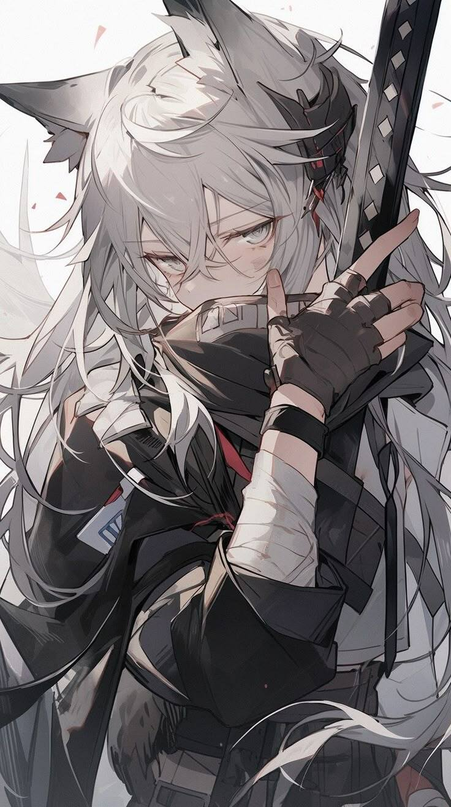

character
Silver Mythrodak

Summary
Raised alone in the forest by spirits, she grew up very feral and wild. After the third prince accidentally wanders into her territory and almost dies, she saves him and nurses him back to health in her cabin. He comes back again and again, eventually dragging her back to the castle against her will because of "danger" in the forest.
Now living in the castle, she messes with the royal family constantly, staying as a guest against her will. Although she eventually learns to love the palace, and decides to stay out of her own free will.
Appearance
White fox ears and two fluffy white fox tails, an unusual genetic deformity in Demi-Humans. Sharp slits and canines, 5/3, with messy, unkept hair. Prefers to typically wear less, skimpier clothing because of growing up in the forest.
Personality
Brash and bold, she refuses to be held down by people or things. She always pushes forward with determination, but also pretends not to care much for people she's close to. She will push past both royalty and commoners alike, not caring for them or their feelings, but secretly will protect them to her deathbed.
Backstory
Raised alone in the forest by spirits, she grew up very feral and wild. Living in a cabin deep into monster-infected woods. As a child, a yellow haired, bright eyed boy came by to visit her quite often. He gave her, her name, taught her language, writing, swordsmanship and more civilized skills, and became her best friend. One day he disappeared, leaving a note that says he's heading into the mountains. He left her his swords, and a photo of them two as children, which she treasures forever. One of her biggest goals is to find him again one day, not believing that he's dead, despite what everyone tells her.
Relationships
| Person | Relation | Notes |
|---|---|---|
| ★ Lorian Eros | Friend/Love Interest |
Abilities / Skills
Enhanced senses due to being a Demi-Human fox, able to twist her body in different ways inhumanly due to different bone layouts. Has a double larynx, letting her sing in different tones and double sound, letting her make musical notes and sounds with just her voice.
She can move her tails independently as limbs, but they move on their own if she doesn't think about moving them directly. They can be used to hold object, or specifically lets her fight in an unconventional 4 swords style. Dual wielding with both her hands and tails.
Story Appearances
The target of a Guild hit Arcy is sent on, later in the timeline
Art
Mentioned in
- Amphora (location)
- Arcy (story)
- Chapter 4 - The Mark (chapter)
- Lorian Eros (character)
★ key · ◆ notable · ▲ rising · ● regular · ✕ dead or former · ? undecided